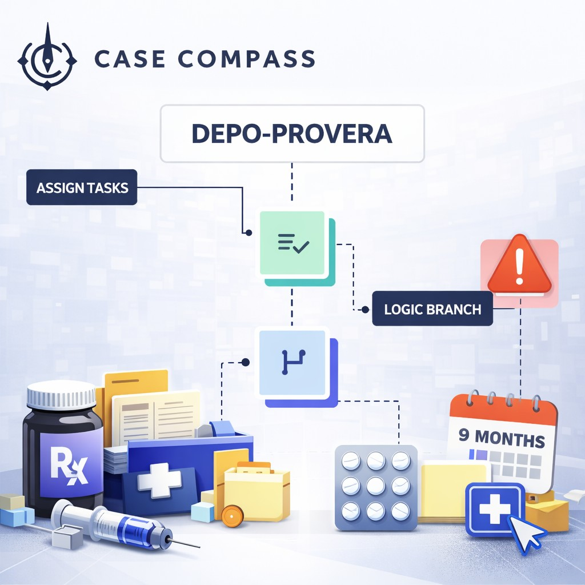

Case Compass verifies Depo-Provera use and meningioma diagnosis, builds a clean exposure timeline, and routes high-score claims to the right team — without replacing your CRM or case management.
CRM and case management agnostic · Works with your existing stack
How It Works
Case Compass structures the messy reality of pharmaceutical intake — collecting injection records, imaging reports, and diagnosis documentation — then scores each claim and routes it to the right team automatically.
Dynamic intake forms and call center automation scripts target injection history, MRI/CT reports, and diagnosis documentation upfront.
Claims with missing records trigger automated follow-up. Claims with complete proof route directly to attorney review.
Duration on drug, last injection date, diagnosis date, and latency — calculated and structured into a clean case packet.

The Problem
High-volume pharmaceutical intake fails when evidence is messy, scattered, and hard to verify fast.
Claimants remember getting "the shot" but can't locate clinic records, pharmacy history, or insurance claims to confirm Depo-Provera specifically — or the dates.
"Brain tumor" isn't enough. Without an MRI/CT report or surgical/pathology note confirming meningioma, the claim can't be substantiated for MDL threshold requirements.
Reconstructing exposure duration, diagnosis dates, and treatment history across multiple providers, portals, and years of records is manual, slow, and error-prone.
What Case Compass Does
Dynamic forms and call center automation scripts collect the right documents up front: injection history, MRI/CT reports, surgical notes, pharmacy records, and insurance claims — before a case worker touches the file.
Auto-build exposure duration, injection-to-diagnosis latency, key dates, and severity indicators. Every claim exits intake with a litigability score and a clear evidence gap report.
Route high-score claims to your call center agents or attorney review instantly. Deduplicate inbound leads, suppress repeats, and automate follow-up sequences for claims awaiting records.
What You Can Validate in Minutes
This maps directly into your scoring model and form logic.
How It Works
Four steps. No rip-and-replace. Works alongside your existing stack.
Dynamic intake form and call center automation script collect exposure history, diagnosis details, and contact information.
Request or upload medical records. Normalize provider terminology, confirm Depo-Provera and meningioma specifics.
Exposure duration + diagnosis + severity + record completeness = litigability score with evidence gap report.
Push clean case packets (CSV/PDF) to your CRM. Route high-score leads to your call center agents, callbacks, or attorney review.
The Litigation Landscape
Factual context for your team and your intake strategy.
Depo-Provera meningioma cases are centralized in MDL 3140 (N.D. Florida), with ongoing case-management orders that include threshold proof requirements for case submission.
The FDA updated U.S. prescribing information for Depo-Provera in December 2025 to add a meningioma risk warning for prolonged use of injectable medroxyprogesterone acetate.
Published analysis has reported increased meningioma risk associated with prolonged injectable DMPA exposure, establishing a scientific basis for causation arguments.
With MDL case management orders tightening, claims without verifiable injection history and confirmed imaging diagnosis face early dismissal risk. Get records before you sign.
No Rip-and-Replace
Case Compass sits between marketing and your existing systems — capturing and qualifying claims, then pushing structured data into the platforms you rely on.
What Firms See
Outcomes vary by firm — these reflect conservative ranges from firms using evidence-first intake.
Common Questions